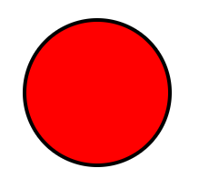
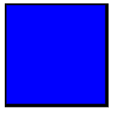
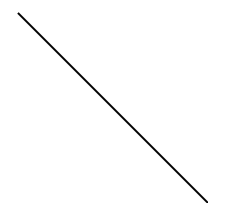
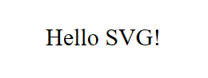
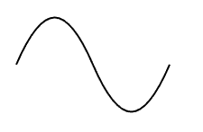

Introduction to SVG
SVG (Scalable Vector Graphics) is an XML-based vector image format for two-dimensional graphics with support for interactivity and animation. Unlike raster graphics, SVG images can be scaled to any size without losing quality, making them ideal for high-resolution displays.
Basic SVG Examples
SVG Circle Example
This example shows how to draw a circle in SVG.
<svg width="200" height="200" xmlns="http://www.w3.org/2000/svg">
<circle cx="100" cy="100" r="80" stroke="black" stroke-width="4" fill="red" />
</svg>The above example creates a circle with a radius of 80px, positioned at (100, 100) inside an SVG canvas. The stroke is black, and the fill is red.
SVG Rectangle Example
Here's how you can create a rectangle in SVG:
<svg width="200" height="200" xmlns="http://www.w3.org/2000/svg">
<rect width="150" height="150" style="fill:blue;stroke:black;stroke-width:5;" />
</svg>The <rect> element defines the rectangle. The width and height define the size, and the style defines the fill color and stroke (border) of the rectangle.
SVG Line Example
Here's an example of a line in SVG:
<svg width="200" height="200" xmlns="http://www.w3.org/2000/svg">
<line x1="10" y1="10" x2="200" y2="200" stroke="black" stroke-width="2" />
</svg>This example draws a diagonal line from the point (10,10) to (200,200). The stroke is black, and the line thickness is 2px.
SVG Text Example
You can also add text to your SVG graphics. Here's an example:
<svg width="200" height="200" xmlns="http://www.w3.org/2000/svg">
<text x="50" y="100" font-size="30" fill="black">Hello SVG!</text>
</svg>This example places the text "Hello SVG!" at coordinates (50, 100) with a font size of 30px and a black color.
Shapes and Paths in SVG
SVG Path Example
Paths are very powerful in SVG and can be used to create complex shapes. Here's an example of a simple path:
<svg width="200" height="200" xmlns="http://www.w3.org/2000/svg">
<path d="M10 80 C 40 10, 65 10, 95 80 S 150 150, 180 80" stroke="black" stroke-width="2" fill="transparent" />
</svg>This path starts at (10, 80), curves to (40, 10), and then continues to another curve to (95, 80) with smooth curves using the "S" command.
Animating SVG Elements
SVG allows you to animate shapes using the <animate> tag or CSS animations. Here's an example that animates a circle:
<svg width="200" height="200" xmlns="http://www.w3.org/2000/svg">
<circle cx="50" cy="50" r="40" fill="blue">
<animate attributeName="cx" from="50" to="150" dur="2s" repeatCount="indefinite" />
</circle>
</svg>This example animates the center (cx) of the circle from 50 to 150 over 2 seconds, and it repeats indefinitely.
Additional SVG Resources
Learn more about SVG and its capabilities:
MDN Web Docs - SVGSVG Viewer
W3C SVG Specification
Download Example SVG in PDF